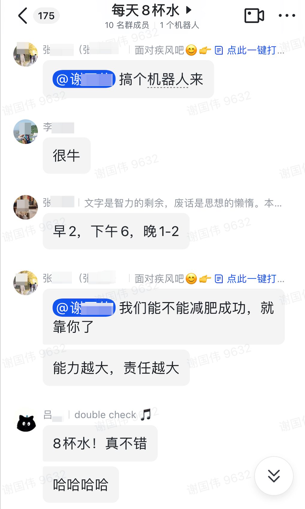
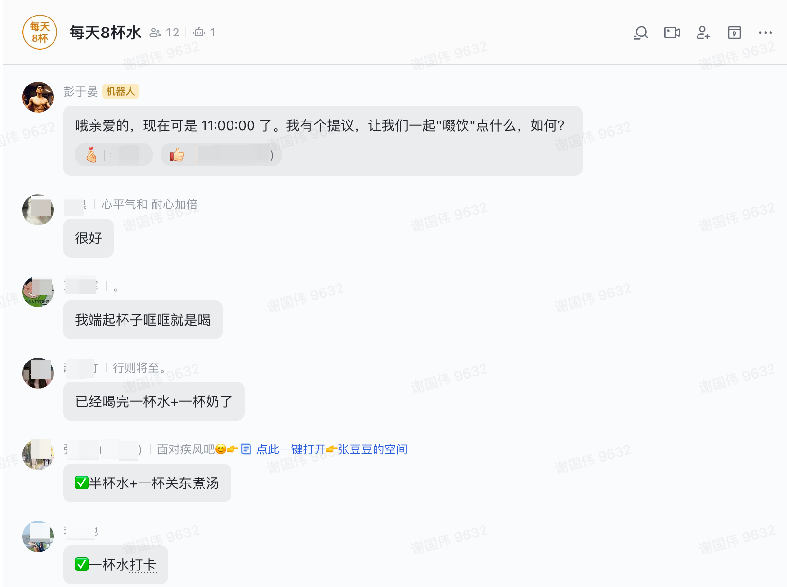

玩AI：趣味定时器，帮助同事喝水减肥
·
Xiebro
 我的同事们立志要“喝水减肥”，为了实现每天8杯水的目标，他们需要一个“定时提醒”。但只是提醒时间的话那未免有点太单调，如果接入大语言模型会不会让喝水这件事变得更加有趣，比如：

接下来，用R语言实现这个趣味定时器…
配置文件
-
使用飞书自定义机器人来推送提醒消息，因此需要在群聊中创建机器人并获得webhook_url，具体参照»飞书API文档
-
调用Gemini的文本生成模型，因此需要配置自己的api_key »申请地址
-
设置触发提醒的时间，在这些时间点才会触发消息提醒
config.yml
default:
# Gemini返回失败时的最大重复尝试次数
trials: 10
# 允许提醒的时间
crontab:
- 10:00:00
- 11:00:00
- 14:00:00
- 15:00:00
- 16:00:00
- 17:00:00
- 18:00:00
- 19:00:00
- 20:00:00
webhook:
# 替换成你自己的
- https://open.feishu.cn/open-apis/bot/v2/hook/xxxxx
gemini:
api: "https://generativelanguage.googleapis.com/v1beta/models/gemini-pro:generateContent?key="
token: "xxxxxxxxxxxxx" # 替换成你自己的key
prompt: "用幽默有趣的方式,简短表达这段话：现在的时间是{current_time}，该喝一杯水了"
R脚本
clock.R
library(config)
library(httr)
library(tidyverse)
gemini <- function(prompt){
url <- paste0(cnf$api, cnf$token)
headers <- c('Content-Type' = 'application/json')
body <- list(
contents = list(
list(
parts = list(
list(
text = prompt
)
)
)
)
)
response <- POST(url, body = body, encode = "json", verbose())
msg <- content(response)[["candidates"]][[1]][["content"]][["parts"]][[1]][["text"]]
return(msg)
}
send_msg <- function(msg, webhook){
print(msg)
body <- list(
msg_type = "text",
content = list(text = msg)
)
response <-
httr::POST(url = webhook,
body = list(msg_type = "text",
content = list(text = msg)),
encode = "json",
add_headers("Content-Type" = "application/json"))
if(response$status_code != 200){
stop(paste0("\n",
"status_code ", response$status_code))
}
if(content(response)$code != 0){
stop(paste0("\n",
"failed code: ", content(response)$code,
"\n",
"failed msg: ", content(response)$msg))
}
}
# run --------------------------------------------------------------------------
cnf <- config::get(config = "gemini")
current_time <- format(Sys.time(), "%H:00:00")
if(!current_time %in% cnf$crontab) stop(paste0(current_time, "为禁止提醒时段..."))
prompt <- stringr::str_glue(cnf$prompt) |> as.character()
trails <- 1
while(TRUE){
msg <- gemini(prompt)
if(!is.null(msg)) {
purrr::walk(cnf$webhook, ~ send_msg(msg = msg, webhook = .))
break
}else(
trials <- trials + 1
)
if(trials > cnf$trails) {
message("尝试次数过多...")
break
}
}
定时任务
接下来设置（本地或服务器）系统定时任务，每个整点执行一次clock.R脚本，当执行时间符合配置文件中的定时，就会触发喝水提醒。
- 打开系统定时器
crontab -e
- 创建定时任务
00 * * * * cd /home/xiebro/water-clock/; Rscript clock.R >> clock.log 2>&1
最后，祝愿这些沙雕同事们能够喝水减肥成功…